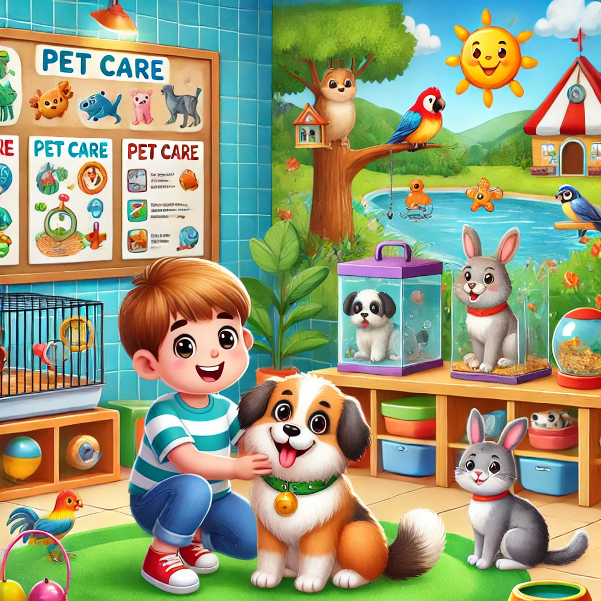

Bienvenida
¡Bienvenidos a nuestra página educativa sobre el cuidado de mascotas! Aquí aprenderás de manera divertida cómo cuidar a tus amigos peludos, emplumados o aletas.
Mascotas
Descubre los diferentes tipos de mascotas que existen y lo que las hace especiales.
Perro
- - Proporcionar una dieta equilibrada.
- - Llevar al veterinario regularmente.
- - Mantener una rutina de ejercicios.
- - Asegurar una higiene adecuada.
Gato
- - Proporcionar una dieta adecuada.
- - Mantener su arenero limpio.
- - Proporcionar juguetes para estimulación mental.
- - Revisiones regulares con el veterinario.
Pez
- - Mantener el acuario limpio.
- - Controlar la temperatura del agua.
- - Alimentar adecuadamente.
- - Revisar la calidad del agua.
Loro
- - Proveer una jaula espaciosa.
- - Alimentar con frutas y vegetales.
- - Proporcionar juguetes para estímulo.
- - Sacarlo para socializar diariamente.
Conejo
- - Proveer una jaula grande.
- - Alimentación variada: heno, vegetales.
- - Asegurar agua fresca diariamente.
- - Espacio para moverse fuera de la jaula.
Hámster
- - Proveer una jaula adecuada.
- - Ofrecer una dieta balanceada.
- - Agua limpia diariamente.
- - Juguetes y rueda para ejercicio.
Cuidados Específicos
Alimentación
Asegúrate de conocer qué alimentos son saludables para tu mascota.
Ejercicio
Aquí encontrarás sugerencias para mantener a tus mascotas activas.
Higiene
Consejos sobre el baño y cuidado de su higiene dental.
Salud
Todo sobre vacunaciones y visitas al veterinario.
Videos y Animaciones
Mira nuestros tutoriales y animaciones educativas.
Cómo cuidar a tu mascota en casa
Aprende los conceptos básicos para mantener a tu mascota feliz y saludable.
Ver VideoLa importancia del ejercicio para mascotas
Descubre actividades que mantendrán a tu mascota activa y saludable.
Ver VideoAnimación: La aventura de Max el perro
Una animación educativa sobre los cuidados básicos de un perro.
Ver VideoCómo alimentar a tu gato adecuadamente
Consejos y trucos sobre la alimentación saludable de gatos.
Ver VideoAnimación: Un día en la vida de una mascota
Explora las actividades diarias de una mascota en esta divertida animación.
Ver VideoCuidado veterinario básico para mascotas
Guía sobre el cuidado veterinario que cada mascota necesita regularmente.
Ver VideoHistorias
Lee cuentos cortos sobre mascotas y sus aventuras.
La gran travesía de Rocky, el perrito aventurero
Rocky, un perrito intrépido, se escapó de casa para explorar el parque cercano, donde descubrió un túnel oculto...
El misterio de Bella, la perrita detective
Bella es una perrita inteligente que, junto a sus amigos, intenta resolver el misterio de las croquetas desaparecidas...
La misión de Pepe, el loro curioso
Pepe, un loro lleno de curiosidad, voló más allá de los árboles buscando un lugar misterioso al que siempre quiso ir...
Sasha y la búsqueda del collar perdido
Sasha, una gata astuta, perdió su collar favorito en el vecindario. Decidida, se embarca en una búsqueda para recuperarlo...
Max y el misterio de la noche estrellada
Max, el cachorro soñador, salió al jardín en una noche estrellada y descubrió un brillo misterioso detrás del árbol...
Coco y el tesoro escondido
Coco, el periquito juguetón, encontró un mapa en la jaula. Con ayuda de sus amigos, se dispuso a buscar el tesoro escondido...
Recursos para Padres
Encuentra guías y recursos útiles para educar a tus hijos sobre el cuidado de las mascotas.
Guía Básica para el Cuidado de Mascotas
Aprende los aspectos básicos del cuidado de mascotas, desde la alimentación hasta la higiene diaria.
Cómo Involucrar a los Niños en el Cuidado de Mascotas
Consejos y actividades para que los niños participen activamente en el cuidado de su mascota.
Responsabilidades de Tener una Mascota
Ayuda a tus hijos a entender las responsabilidades y el compromiso de tener una mascota en casa.
Cuidando Mascotas con Necesidades Especiales
Información sobre el cuidado de mascotas con condiciones de salud especiales y cómo incluir a los niños en el proceso.
Cómo Presentar una Nueva Mascota a la Familia
Guía paso a paso para que tus hijos se adapten a una nueva mascota en casa.
Cuidados y Seguridad para Mascotas al Aire Libre
Aprende cómo enseñar a los niños a cuidar de sus mascotas en espacios al aire libre de manera segura.